What is light pollution? Light pollution is the inapprioriate and excessive use of artificial light. This is light that is added unnecessarily and do not serve a proper purpose. We see light pollution everyday, from inefficient streetlights that light the sky up more than the streets, unnecessary lights being lit when no one is using it and the glow of the sky with the accumulation of excessive light sources in the city. Light pollution could be significantly reduced if we used light efficiently and excess light could be reduced.
Scroll on to learn more →
The night sky is a natural treasure that has existed and been treasured for all the years that humans have existed on Earth. Humans in time have used the night sky to navigate the globe, discover the universe, walk on the moon and develop science. With the night sky comes wonder, inspiration and beauty. Everyone should be able to star-gaze and wonder at the vastness of the universe - in the future and right now.
The pollution of light obscures the light from the stars in our sky. Depending on the intensity of the light pollution, certain star monuments will be invisible to the human eye. Most notably, key celestial figures like the Milky Way, the Northern Star or the Big Dipper will no longer be visible at increasing light levels.
Light pollution is harmful not only to our night sky but also in ecology and animal behaviour. Light affects animals in multiple ways that affect how they survive in their environment which can ber very detrimental.
Animals have innate responses to light which no longer benefit them in the modern world as it had benefited them in the past. Animals with certain directional responses will be lead astray from ambient lighting. Take sea turtle hatchlings for example. When hatched, baby turtles have a positive phototropic response to light as this used to lead them towards the ocean. In the modern day, turtle eggs that hatch on the lighted beaches will instinctively move towards the lights emitted by the street lamps and away from the ocean. This endangers the young turtles and cause them to be severely disoriented.
Night-time lighting is also an issue as it messes with ecology and animal activity in nocturnal and diurnal animals (especially nocturnal). Light pollution may extend the active times of diurnal animals which benefits the animal but puts their prey at a disadvantage. Nocturnal animals will be disrupted as they are not used to bright lights at the dark times when they are active. This can cause them to be disoriented or have shorter active times.
Humans are used to the day-night cycle of the Earth and the disruption of artificial light in naturally dark hours can be damaging to human health. The cycle of day and night controls certain body hormones.
At night, between 10pm - 4am in natural dark light, the body releases the hormone melatonin. Melatonin regulates sleep circadian rhythms and is secreted in low levels (zero) of light when detected by the retina and sends a signal through the optic nerve. Melatonin allows delta sleep (deep and restorative sleep) to occur. During the daylight hours, melatonin is converted into serotonin. Light active at night will delay the release of our sleep hormones and disrupt our circadian cycle. We need our regular sleep hours as our bodies needs that time to repair damage, fight infection and disease.